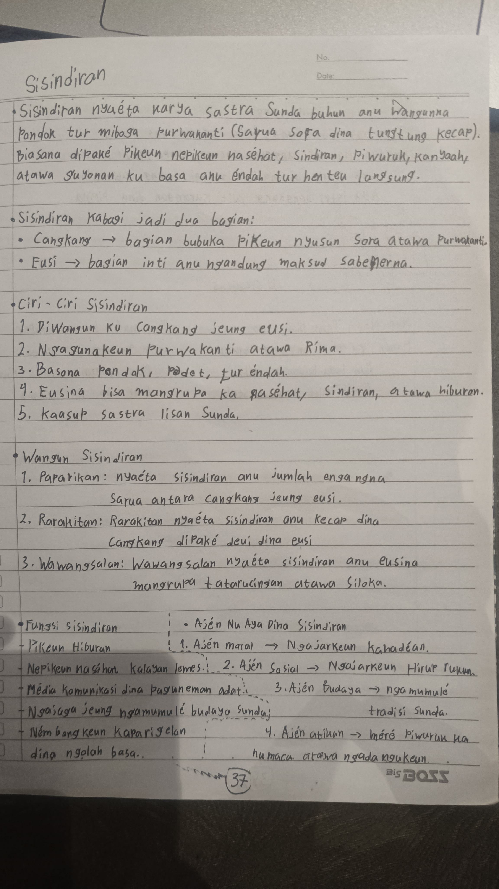
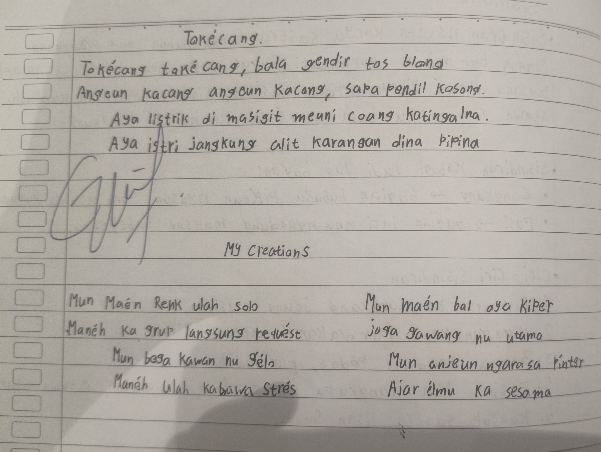

Halaman 37, Buku catatan Sunda Badi

Halaman 38, Buku catatan Sunda Badi
Sisindiran nyaéta karya sastra Sunda buhun anu wangunna Pondok tur Miboga Purwakanti (Sarua sora dina tungtung kecap). Biasana dipaké pikeun nepikeun naséhat, sindiran, piwuruk, kanyaah, atawa guyonan ku basa anu éndah tur henteu langsung.
• Sisindiran kabagi jadi dua bagian
1. Cangkang → Bagian bubuka pikeun nyusun sora atawa purwakanti.
2. Eusi → Bagian inti anu ngandung maksud sabenenrna.
• Ciri-ciri Sisindiran
1. Diwangun ku cangkang jeung eusi.
2. Ngagunakeun purwakanti atawa rima.
3. Basana pondok, padet, tur éndah.
4. Eusina bisa mangrupa ka naséhat, sindiran, atawa hiburan.
5. Kaasup sastra lisan Sunda.
• Wangun Sisindiran
1. Paparikan : Nyaéta sisindiran anu jumlah éngangna sarua antara cangkang jeung eusi.
2. Rarakitan : Rarakitan nyaéta sisindiran anu kecap fina cangkang dipaké deui dina eusi.
3. Wawangsalam : Wawangsalam nyaéta sisindiran anu eusina mangrupa tatarucingan atawa siloka.
• Wangun Sisindiran
1. Paparikan : Nyaéta sisindiran anu jumlah éngangna sarua antara cangkang jeung eusi.
2. Rarakitan : Rarakitan nyaéta sisindiran anu kecap fina cangkang dipaké deui dina eusi.
3. Wawangsalam : Wawangsalam nyaéta sisindiran anu eusina mangrupa tatarucingan atawa siloka.
• Fungsi Sisindiran
- Pikeun hiburan
- Nepikeun naséhat kalayan lemes
- Média komunikasi dina paguneman adat
- Ngajaga jeung ngamumulé budaya sunda
- Némbongkeun Kaparigelan dina ngolah basa.
• Sisindiran kabagi jadi dua bagian
1. Ajén Moral → Ngajarkeun kahadéan.
2. Ajén Sosial → Ngajarkeun hirup rukun.
3. Ajén Budaya → Ngamumulé tradisi sunda.
4. Ajén Atikan → Méré Piwuruk ka nu maca. Atswa ngadangukeun.
• Tokécang
Tokécang tokécang
Bala gendil tos blong
Angeun kacang angeun kacang
Sapariuk kosong
Aya listrik di masigit
Meuni caang katingalna
Aya istri jangkung alit
Karangan dina pipina
• Sisindiran Abdi
Mun maén rénk ulah solo
Manéh ka grup langsung requést
Mun boga kawan nu gélo
Manéh ulah kabawa strés
Mun maén bal aya kiper
Jaga gawang nu utama
Mun anjeun ngarasa pinter
Ajar élmu ka sesama